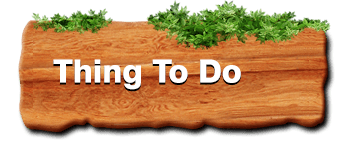

- The Haji Ali Dargah is a historical landmark in Mumbai, and is also one of the most prestigious Islamic symbols situated in South Mumbai.
- The Haji Ali was built by a wealthy Muslim merchant who became a saint named Haji Ali Shah Bukhari.
- People from all over the world visit the Haji Ali Dargah irrespective of caste, religion and creed.
- The Haji Ali Dargah is a popular pilgrimage site today and most tourists visit the tomb of Pir Haji Ali Shah Bukhari to seek his blessings for wealth, health, marriage etc.
- The Haji Ali Dargah is made of 'Makrana' marble, the same whitewashed marble that Emperor Shah Jahan used to build the Taj Mahal.
- The Haji Ali Dargah houses two important monuments-tomb of Pir Haji Ali Shah Bukhari and a mosque.

- Apart from visiting the Dargah, offering prayers and seeking the blessings of the saint, there are various other things to do in and around the Dargah.
- Local stalls outside the complex of the Haji Ali Dargah will give you the opportunity to indulge in some delicious local cuisine and local specialties such as Kebabs, Chaat, Ice-cream, Mughlai Biryani, Hyderabadi fast food and even American fast-food.
- if you are an avid shopper-the best places would be Crawford Market and Fashion Street.
- If you enjoy serenity and happen to be a nature lover, you can decide to unwind at the beach at Mahim Bay.
- Worli Sea-link
- Breach Candy
- Nana Chowk
- Mahalakshmi Race Course Stadium
 By Road:
By Road:
- When coming from the Airport / Western Suburbs one needs to travel via, L. J. Road, Shivaji Park, Prabhadevi, Worli or via the Sea-link to Worli and then on to Lala Lajpat Rai Marg (a.k.a. Hornby Vellard) to reach Haji Ali.
- When coming from the Central Suburbs / Navi Mumbai, one needs to drive via Ghatkopar (Eastern Express Highway) / Chembur / Kurla to Sion, Matunga, Dadar and cross-over to Shivaji Park , Prabhadevi, Worli or via the Sea-link to Worli and then on to Lala Lajpat Rai Marg (a.k.a. Hornby Vellard) to reach Haji Ali.
- From South Mumbai one can approach Haji Ali via Kemps Corner / Pedder Road / Breach Candy or Nana Chowk, Tardeo or Byculla, Mahalakshmi Race Course.
- The B.E.S.T plies many buses via and to / fro from various parts of the city and suburbs via Haji Ali. Some popular route no.s are 33, 37, 63, 81, 83, 84, 85, 87, 89, 92, 93, 124, 125, 351, 357, 385, 521.
By Rail:
- Haji Ali is well connected by local trains. On the Western line one needs to get off at Mahalakshmi Station or Mumbai Central Station, while on the the Central (Main) line one needs to get off at Byculla Station and take a B.E.S.T. bus / Taxi.